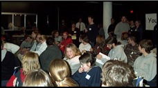
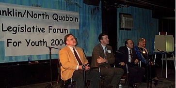
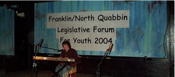

The 5th Annual
Legislative Forum for Youth
Friday
January 26,
2007
3-5 p.m.
Greenfield Community Youth Center
20 Sanderson St.
Greenfield, Massachusetts
Forum Flyer --Print it out and pass it
around!

Welcome to the home
of the Legislative Forum for Youth. This year the 5th
Legislative Forum for Youth will be held on Friday January
26, 2007 at the Greenfield Community Youth Center, located
at 20 Sanderson St. The event serves as an opportunity for
local and area youth to present their opinions and ideas to
present state and local representatives with questions
regarding the most recent and existing political issues.

In the past, attendance of elected officials has included
Senator Stanley Rosenburg, Representatives Chris Donelan,
Dennis Guyer, and Steve Kulik. Greenfield Mayor Christine
Forgey, members of the Select Boards in Ashfield, Montague,
and Orange, as well as representatives of the Greenfield
Town Council.

Four pre-forum
trainings will be held at the Greenfield Community
Youth Center to help increase knowledge and awareness of
the legislative process as well as prepping the
participating youth to prepare and articulate their
questions for the legislators. These workshops will be
held between 5-7 p.m. on January 3, 10, 17 and
24 at the Greenfield Community Youth Center at
20 Sanderson Street. The trainings will be given by
AmeriCorps members Sarah Merva and Shannon Kelly, as
well as Erika Heilig of the Franklin Hampshire Regional
Employment Board. All youth and those affiliated with
youth serving organizations are welcome and encouraged
to attend both the workshops as well as the Forum.
Last year's event attracted an
audience of over 150 people, and youth presented
legislators with questions surrounding issues on education,
transportation, as well as community services.
For more information on this event or trainings involved
with the Forum please contact Jennifer Johnson from
Dial/Self Teen Services at 774-7054 ext. 104.
The Forum is sponsored by the Franklin County Youth Services
Roundtable and the
YouthServe AmeriCorps Program.